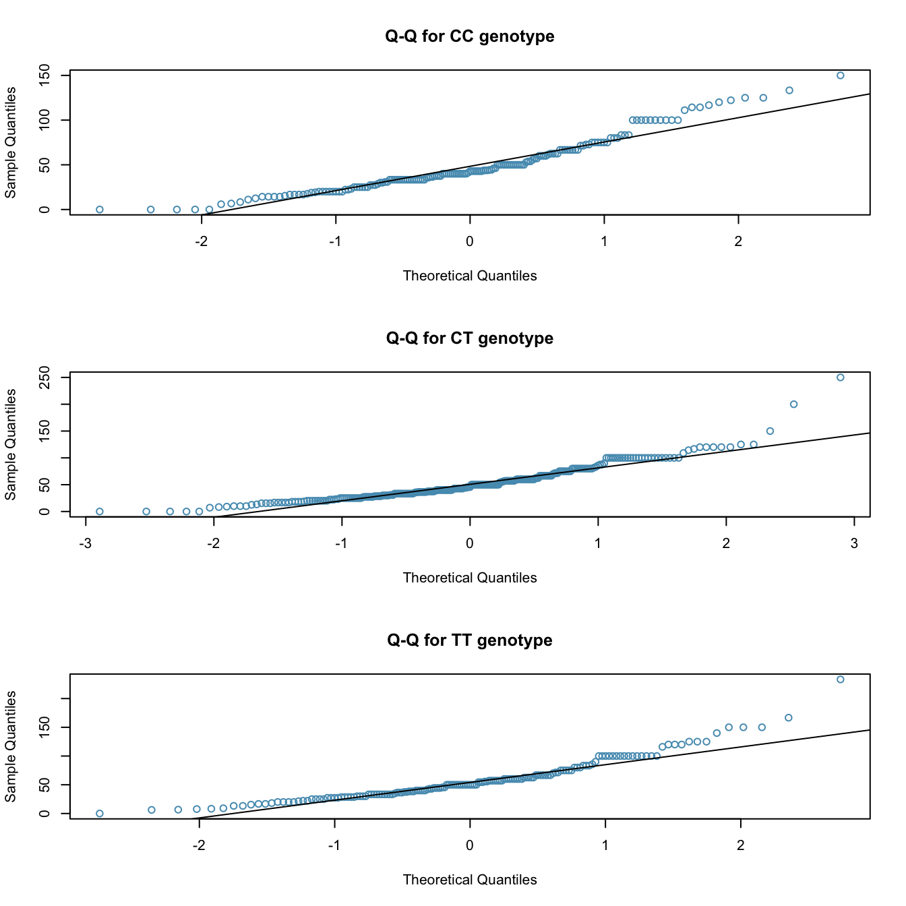

20 Comparing means with ANOVA
This is a derivative work of Section 5.5 in Introductory Statistics for the Life and Biomedical Sciences, First Edition by Julie Vu and David Harrington. The initial git commit represents a copy-and-paste of the textbook into Quarto format, and subsequent edits represent my modfications.
In some settings, it is useful to compare means across several groups. It might be tempting to do pairwise comparisons between groups; for example, if there are three groups (\(A, B, C\)), why not conduct three separate \(t\)-tests (\(A\) vs. \(B\), \(A\) vs. \(C\), and \(B\) vs. \(C\))? As we saw in the lecture on Cautions for Inference, we inflate the Type 1 error when we do many hypothesis tests. Even at a 5% level, at three hypothesis tests there is about a \(1 - (1 - 0.05)^3 = 14.2625%\) chance1 that one of them is significant assuming that the null hypothesis is true!
Instead, the methodology behind a \(t\)-test can be generalized to a procedure called ANalysis Of VAriance (ANOVA), which uses a single hypothesis test to assess whether all means across several groups are equal. Strong evidence favouring the alternative hypothesis in ANOVA is described by unusually large differences among the group means.
- \(H_0\): The mean outcome is the same across all \(k\) groups. In statistical notation, \(\mu_1 = \mu_2 = \cdots = \mu_k\) where \(\mu_i\) represents the mean of the outcome for observations in category \(i\).
- \(H_A\): At least one mean is different.
There are three assumptions that must be checked before performing ANOVA:
- Observations are independent within and across groups.
- All individuals in the study are independent of all other individuals.
- The data within each group are “nearly” normal.
- the variability across the groups is about equal.
Example 5.19
Examine Figure 5.22. Compare groups I, II, and III. Is it possible to visually determine if the differences in the group centers is due to chance or not? Now compare groups IV, V, and VI. Do the differences in these group centers appear to be due to chance?
It is difficult to discern a difference in the centers of groups I, II, and III, because the data within each group are quite variable relative to any differences in the average outcome. However, there appear to be differences in the centers of groups IV, V, and VI. For instance, group V appears to have a higher mean than that of the other two groups. The differences in centers for groups IV, V, and VI are noticeable because those differences are large relative to the variability in the individual observations within each group.
20.1 Analysis of variance (ANOVA) and the \(F\)-test
The famuss dataset was introduced in Chapter 1, Section 1.2.2. In the FAMuSS study, researchers examined the relationship between muscle strength and genotype at a location on the ACTN3 gene. The measure for muscle strength is percent change in strength in the non-dominant arm (). Is there a difference in muscle strength across the three genotype categories (CC, CT, TT)?
Hypotheses
The null hypothesis under consideration is the following: \(\mu_{\texttt{CC}} = \mu_{\texttt{CT}} = \mu_{\texttt{TT}}\). Write the null and corresponding alternative hypotheses in plain language.
Solution
\(H_0\): The average percent change in non-dominant arm strength is equal across the three genotypes. \(H_A\): The average percent change in non-dominant arm strength varies across some (or all) groups.]Assumption Checking
The table below provides summary statistics for each group. A side-by-side boxplot for the change in non-dominant arm strength is shown in Figure 5.24; Figure 5.25 shows the Q-Q plots by each genotype.2
- It is reasonable to assume that the observations are independent within and across groups; it is unlikely that participants in the study were related, or that data collection was carried out in a way that one participant’s change in arm strength could influence another’s.
- Based on the Q-Q plots, there is evidence of moderate right skew; the data do not follow a normal distribution very closely, but could be considered to ‘loosely’ follow a normal distribution.3
- Notice from the table that the variability appears to be approximately constant across groups; nearly constant variance across groups is an important assumption that must be satisfied for using ANOVA.
CC |
CT |
TT |
|
|---|---|---|---|
| Sample size (\(n_i\)) | 173 | 261 | 161 |
| Sample mean (\(\bar{x}_i\)) | 48.89 | 53.25 | 58.08 |
| Sample SD (\(s_i\)) | 29.96 | 33.23 | 35.69 |

Difference in Means
The largest difference between the sample means is between the and groups. Consider again the original hypotheses:
- \(H_0\): \(\mu_{\texttt{CC}} = \mu_{\texttt{CT}} = \mu_{\texttt{TT}}\)
- \(H_A\): The average percent change in non-dominant arm strength (\(\mu_i\)) varies across some (or all) groups.
Why might it be inappropriate to run the test by simply estimating whether the difference of \(\mu_{\texttt{CC}}\) and \(\mu_{\texttt{TT}}\) is statistically significant at a 0.05 significance level?
Solution
It is inappropriate to informally examine the data and decide which groups to formally test. This is a form of **data fishing*; choosing the groups with the largest differences for the formal test will lead to an increased chance of incorrectly rejecting the null hypothesis (i.e., an inflation in the Type~I error rate). Instead, all the groups should be tested using a single hypothesis test.Mean Squared Error - Within and Between
Analysis of variance focuses on answering one question: is the variability in the sample means large enough that it seems unlikely to be from chance alone? The variation between groups is referred to as the mean square between groups (\(MSG\)); the \(MSG\) is a measure of how much each group mean varies from the overall mean. Let:
- \(\overline{x}\) represent the mean of outcomes across all groups
- In other words, it’s the mean of the data when it’s not split into groups.
- \(\overline{x}_i\) is the mean of outcomes in a particular group \(i\)
- \(n_i\) is the sample size of group \(i\).
The mean square between groups is: \[ MSG = \frac{1}{k-1}\sum_{i=1}^{k} n_{i}\left(\overline{x}_{i} - \overline{x}\right)^{2} = \frac{1}{df_{G}}SSG, \] where \(SSG\) is the sum of squares between groups, \(\sum_{i=1}^{k} n_{i}\left(\overline{x}_{i} - \overline{x}\right)^{2}\), and \(df_{G}=k-1\) is the degrees of freedom associated with the \(MSG\) when there are \(k\) groups.
Notice what’s happening here: \(MSG\) is kind of like a variance, but not the variance of individual values.
MSG is the variance of the means
Instead of individual data, we’re looking at the mean of each group. With 3 groups, we have 3 different means. The \(MSG\) is like calculating the variance based on these 3 values (disregarding the variation within each group).
Under the null hypothesis, there is no real difference between the groups. In other words, the null hypothesis assumes that the groupings are non-informative, such that all observations can be thought of as belonging to a single group. If the null is true, then it the variability between the group means should be equal to the variability observed within a single group. The mean square error (\(MSE\)) is a pooled variance estimate with associated degrees of freedom \(df_E=n-k\) that provides a measure of variability within the groups. The mean square error is computed as: \[ MSE = \frac{1}{n-k}\sum_{i=1}^{k} (n_i-1)s_i^{2} = \frac{1}{df_{E}}SSE, \] where the \(SSE\) is the sum of squared errors, \(n_i\) is the sample size of group \(i\), and \(s_i\) is the standard deviation of group \(i\).
The MSE is the variance as if there are no groups
The MSE is almost the same as the variance of the data, assuming we lumped everything together and forgot about the groupings. The only difference is the degrees of freedom!
Under the null hypothesis that all the group means are equal, any differences among the sample means are only due to chance; thus, the \(MSG\) and \(MSE\) should also be equal. ANOVA is based on comparing the \(MSG\) and \(MSE\). The test statistic for ANOVA, the F-statistic, is the ratio of the between-group variability to the within-group variability: \[ F = \frac{MSG}{MSE} \]
This is a new distribution that we’re not going to talk about too much. The main thing to note is that i’s similar to the Chi-Square distribution: The test statistic is based on adding squared things, so we’re only interested in a right-tailed test.
The \(F\)-Statistic
The F-statistic can be seen as the ratio of the variance between groups and the variance within groups. A large \(F\)-stat means that there’s a lot of variance between groups compared to the variance of the data.
Put another way, the data tells us how much variance to expect so that we have context for the variance of the group means.
Calculating the \(F\)-statistic
Calculate the \(F\)-statistic for the famuss data summarized in Figure 5.23. The overall mean \(\overline{x}\) across all observations is 53.29.
Solution: By hand
First, calculate the \(MSG\) and \(MSE\). \[\begin{align*} MSG =& \frac{1}{k-1}\sum_{i=1}^{k} n_{i}\left(\bar{x}_{i} - \bar{x}\right)^{2} \\ =& \frac{1}{3-1} [(173)(48.89 - 53.29)^{2} \\&+ (261)(53.25 - 53.29)^{2} + (161)(58.08 - 53.29)^{2} ]\\ =& 3521.69 \end{align*}\]
Notice how the MSG is essentially the variance of three observations.
\[\begin{align*} MSE =& \frac{1}{n-k}\sum_{i=1}^{k} (n_i-1)s_i^{2} \\ =& \frac{1}{595-3}[(173-1)(29.96^2) + (261-1)(33.23^2) \\&+ (161-1)(35.69^2)] \\ =& 1090.02 \end{align*}\]
The MSE is almost the same as the variance of all observations if we were to ignore which group they were in!
The \(F\)-statistic is the ratio: \[ dfrac{MSG}{MSE} = dfrac{3521.69}{1090.02} = 3.23 \]Solution: R
The following R code will save us many calculations.
As in the linear regression section, I use the summary() function to get nicer output.
library(oibiostat)
data(famuss)
# The data have uninformative names.
# ndrm.ch is percentage change in non-dominant arm strength
# actn3.r577x is the grouping variable (genotype)
summary(aov(ndrm.ch ~ actn3.r577x, data = famuss)) Df Sum Sq Mean Sq F value Pr(>F)
actn3.r577x 2 7043 3522 3.231 0.0402 *
Residuals 592 645293 1090
---
Signif. codes: 0 '***' 0.001 '**' 0.01 '*' 0.05 '.' 0.1 ' ' 1Notice how the R output givus us - \(df_G = 592\), \(MSG = 3522\) (rounded from 3521.69) - \(df_E = 2\), \(MSE = 1090\) (rounded from 1090.02) - \(MSG / MSE = 3.231\)
I will not expect you to do the calculations by hand on any test or assignment.
p-values
A \(p\)-value can be computed from the \(F\)-statistic using an \(F\)-distribution, which has two associated parameters: \(df_{1}\) and \(df_{2}\). For the \(F\)-statistic in ANOVA, \(df_{1} = df_{G}\) and \(df_{2}= df_{E}\). An \(F\) distribution with 2 and 592 degrees of freedom corresponds to the \(F\)-statistic for the genotype and muscle strength hypothesis test,.
The larger the observed variability in the sample means (\(MSG\)) relative to the within-group variability (\(MSE\)), the larger \(F\) will be. Larger values of \(F\) represent stronger evidence against the null hypothesis. The upper tail of the distribution is used to compute a \(p\)-value, which is typically done using statistical software.
Conclusion
From the R output, the \(p\)-value corresponding to the test statistic is equal to about 0.04. Does this provide strong evidence against the null hypothesis at significance level \(\alpha = 0.05\)?
Solution
The \(p\)-value is smaller than 0.05, indicating the evidence is strong enough to reject the null hypothesis at a significance level of 0.05. The data suggest that average change in strength in the non-dominant arm varies by participant genotype.
The \(F\)-statistic and the \(F\)-test
Analysis of variance (ANOVA) is used to test whether the mean outcome differs across two or more groups. ANOVA uses a test statistic \(F\), which represents a standardized ratio of variability in the sample means relative to the variability within the groups. If \(H_0\) is true and the model assumptions are satisfied, the statistic \(F\) follows an \(F\) distribution with parameters \(df_{1}=k-1\) and \(df_{2}=n-k\). The upper tail of the \(F\)-distribution is used to calculate the \(p\)-value.
The null hypothesis is false if at least of the means is sufficiently different from the others, relative to the variance in the data.
20.2 Multiple comparisons and controlling Type 1 Error rate
Rejecting the null hypothesis in an ANOVA analysis only allows for a conclusion that there is evidence for a difference in group means. In order to identify the groups with different means, it is necessary to perform further testing. For example, in the famuss analysis, there are three comparisons to make: \(\texttt{CC}\) to \(\texttt{CT}\), \(\texttt{CC}\) to \(\texttt{TT}\), and \(\texttt{CT}\) to \(\texttt{TT}\). While these comparisons can be made using two sample \(t\)-tests, it is important to control the Type 1 error rate. One of the simplest ways to reduce the overall probability of identifying a significant difference by chance in a multiple comparisons setting is to use the Bonferroni correction procedure.
In the Bonferroni correction procedure, the \(p\)-value from a two-sample \(t\)-test is compared to a modified significance level, \(\alpha^\star\); \(\alpha^\star = \alpha/K\), where \(K\) is the total number of comparisons being considered. For \(k\) groups, \(K=\frac{k(k-1)}{2}\). When calculating the \(t\)-statistic, use the pooled estimate of standard deviation between groups (which equals \(\sqrt{MSE}\)); to calculate the \(p\)-value, use a \(t\)-distribution with \(df_2\). It is typically more convenient to do these calculations using software.
Bonferroni correction
The Bonferroni correction suggests that a more stringent significance level is appropriate when conducting multiple tests: \[\begin{align*} \alpha^\star = \alpha / K \end{align*}\] where \(K\) is the number of comparisons being considered. For \(k\) groups, \(K=\frac{k(k-1)}{2}\).
But which group is different?
The ANOVA conducted on the famuss dataset showed strong evidence of differences in the mean strength change in the non-dominant arm between the three genotypes. Complete the three possible pairwise comparisons using the Bonferroni correction and report any differences.
Use a modified significance level of \(\alpha^\star = 0.05/3 = 0.0167\). The pooled estimate of the standard deviation is \(\sqrt{MSE} = \sqrt{1090.02} = 33.02\).
Genotype CC versus Genotype CT: \[
t = \frac{\overline{x}_1 - \overline{x}_2}{s_{\text{pooled}}\sqrt{\frac{1}{n_1} + \frac{1}{n_2}}}
= dfrac{48.89 - 53.25}{33.02 \sqrt{\frac{1}{173} + \frac{1}{261}}} = -1.35
\] This results in a \(p\)-value of 0.18 on \(df =592\). This \(p\)-value is larger than \(\alpha^\star = 0.0167\), so there is not evidence of a difference in the means of genotypes CC and CT.
Genotype CC versus Genotype TT: \[
t = \frac{\overline{x}_1 - \overline{x}_2}{s_{\text{pooled}}\sqrt{\frac{1}{n_1} + \frac{1}{n_2}}}
= dfrac{48.89 - 58.08}{33.02 \sqrt{\frac{1}{173} + \frac{1}{161}}} = -2.54.
\]
This results in a \(p\)-value of 0.01 on \(df =592\). This \(p\)-value is smaller than \(\alpha^\star = 0.0167\), so there is evidence of a difference in the means of genotypes CC and TT.
Genotype CT versus Genotype TT:
\[
t = \frac{\overline{x}_1 - \overline{x}_2}{s_{\text{pooled}}\sqrt{\frac{1}{n_1} + \frac{1}{n_2}}}
= dfrac{53.25 - 58.08}{33.02 \sqrt{\frac{1}{261} + \frac{1}{161}}} = -1.46
\]
This results in a \(p\)-value of 0.14 on \(df =592\). This \(p\)-value is larger than \(\alpha^\star = 0.0167\), so there is not evidence of a difference in the means of genotypes CT and TT.
In R, these can be calculated using the pairwise.t.test() function as follows:
pairwise.t.test(famuss$ndrm.ch, famuss$actn3.r577x,
p.adjust.method = "bonferroni")
Pairwise comparisons using t tests with pooled SD
data: famuss$ndrm.ch and famuss$actn3.r577x
CC CT
CT 0.537 -
TT 0.034 0.433
P value adjustment method: bonferroni As you can guess from the command and its output:
- There is more than one way of adjusting p-values! There is some debate about the best way, but the important thing is to recognize when they’re necessary and use them!
- This test is using a pooled standard deviation. Thast is, it calculates the sd as if all of the data have the same variance.
- For the t-test, it’s easy enough to use different variances for each group. For multiple comparisons, using the pooled variance makes a little bit more sense because it will tend to be larger, and therefore we’re adding extra variance and not being overconfident in our results.
From these results, we can see that CC and TT are significantly different from each other. CC and CT are not, and neither are CT and TT.4
20.3 Summary
In summary, the mean percent strength change in the non-dominant arm for genotype CT individuals is not statistically distinguishable from those of genotype CC and TT individuals. However, there is evidence that mean percent strength change in the non-dominant arm differs between individuals of genotype CC and TT are different.
This is 1 minus the probability of no significant results in three tests. The probability of a result that is not significant is \(1-0.05\), so we do this three times and then do 1 minus the result. This is similar to the probability of not getting a 6 in 3 dice rolls.↩︎
The previous lesson has some code to help you interpret Q-Q plots.↩︎
In a more advanced course, it can be shown that the ANOVA procedure still holds with deviations from normality when sample sizes are moderately large. Additionally, a more advanced course would discuss appropriate transformations to induce normality.↩︎
Note that this is not transitive! CC and CT are not, CT and TT are not, but CC and TT are different!↩︎